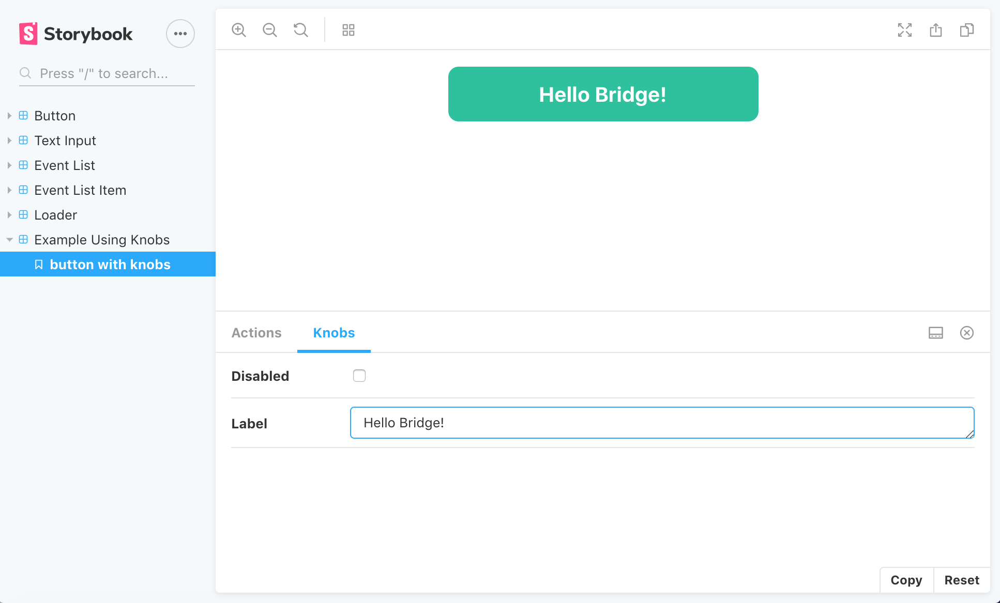

What Is It?
- An open source tool for developing UI components in isolation.
- Provides a UI where you can search through and preview your component library.
- Compatible with a variety of libaries including React, React Native, Vue, Angular, Ember, Svelte, Mithril, and plain ol' HTML.
Why Use It?
- Gives you a bird's eye view of your component library, with all of your components in a centralized location
- Demo all states and use cases without having to manipulate data (even hard to reach use cases)
- Storybook can be deployed as a static site and easily shared with the entire team
How To Use It?
- Set up your .storybook/config.js
- If you are using any "addons", import them into .storybook/addons.js
- Build out your storybook by writing stories for each component. Stories are functions that return the rendered component - each story represents a single possible state of a component
- Story files can be placed anywhere - are usually grouped with other component files, or in a stories directory
Config
import { configure } from '@storybook/react';
import '../src/App.css';
function loadStories() {
require('../stories/index.js');
}
configure(loadStories, module);
Addons
import '@storybook/addon-actions/register';
import '@storybook/addon-knobs/register';
Add Ons
There are a variety of plugins to add functionality to the Storybook UI:
- Knobs edit component props dynamically within the Storybook UI
- Actions display data received by event handlers
- Storyshots works with Jest to take snapshots of your stories
- Notes add detailed components notes using markdown
- Accessibility: test component compliance with web accessibility standards
There is even an API for developing your own addons.
Let's Look At Some Code!

What It's Not
Storybook is primarily a development tool used when building your component library. It currently does not offer features that allow for building more robust styleguide documentation.
HOWEVER they have announced they are currently working on a feature that would generate styleguide documentation using markdown.
/